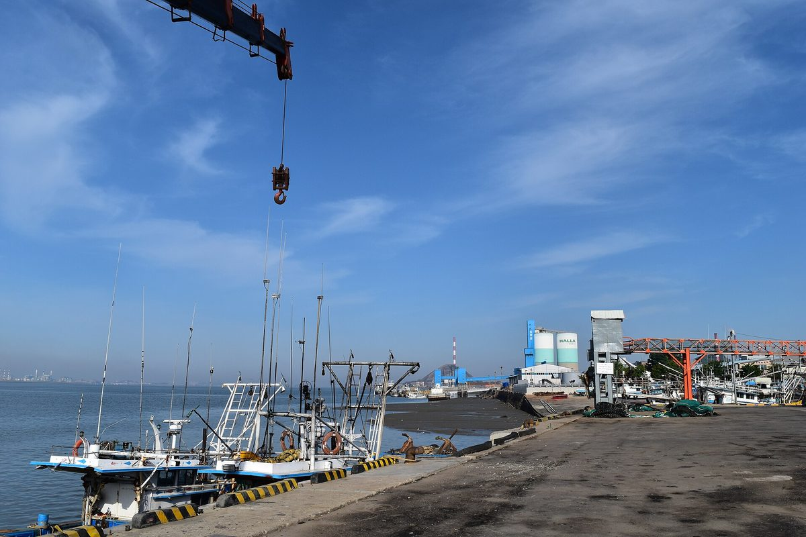

서천군의회 조성훈 의원, 장항국가생태산단서 생산 없이 태양광만 돌리는 입주업체 점검 요구

행정사무감사서 공장 건립·생산설비·실제 가동·고용 실태 확인 촉구…입주·변경계약과 발전사업 허가조건 이행 여부 관계기관과 확인, 위반 땐 법령·계약 따라 조치해야
충남 서천군의회 조성훈 의원이 장항국가생태산업단지에 제조업을 하겠다며 들어온 업체 가운데 생산은 하지 않고 태양광 발전시설만 가동하는 곳이 있다며 서천군에 실태 점검을 요구했다. 조 의원은 21일 열린 2026년도 행정사무감사에서 공장을 지었는지만 볼 것이 아니라 생산설비를 갖췄는지, 실제로 돌리고 있는지, 고용은 어떤지까지 함께 살펴야 한다고 지적했다. 가동이 늦어지는 업체는 그 이유와 정상 가동 계획을 확인하고, 태양광 설비에 대해서는 입주계약·변경계약·발전사업 허가조건을 제대로 지켰는지 관계기관과 함께 따져 봐야 한다는 것이다. 위반이 드러나면 법령과 계약에 근거해 조치하고 제도에 빈틈이 있으면 개선책을 마련해야 한다는 주문도 덧붙였다. 조 의원은 "실제 생산활동 없이 태양광 발전시설만 가동하면 안 된다"며, 기업 유치와 일자리 창출이라는 산단 조성 취지에 맞게 기업을 유치한 뒤에도 이행 상황을 계속 관리할 대책을 세우라고 촉구했다. 해당 업체의 이름과 수, 발전설비 규모는 공개되지 않았다.
시민에너지 관점
산업단지 지붕과 부지에 태양광을 올리는 것 자체는 탓할 일이 아니지만, 공장 터가 사실상 발전소 터로만 쓰인다면 공공이 산단을 조성한 목적과 지역의 기대가 어긋난다. 태양광이 일자리를 빼앗는다는 반론으로 번질 수 있으나, 문제의 핵심은 태양광이 아니라 발전 수익이 업체에만 돌아가고 지역에는 남는 것이 없다는 구조로 보인다. 공공이 만든 산단에서 나오는 발전 수익이라면 주민과 협동조합도 지분을 갖고 수익을 나눌 수 있게 설계해야 재생에너지가 지역의 반감이 아니라 지역의 자산이 된다. 서천군은 실태 점검과 함께 산단 태양광에 주민이 참여할 수 있는 조건을 관리계획에 담는 방안부터 검토해야 한다.
출처: 로컬투데이 2026-10-22 최종암 원문 보기
舒川郡議会のチョ・ソンフン議員、長項国家生態産業団地で生産せず太陽光だけを動かす入居企業の点検を要求
行政事務監査で工場建設・生産設備・実際の稼働・雇用の実態確認を求める…入居・変更契約と発電事業許可条件の履行を関係機関と確認し、違反があれば法令・契約に基づく措置を
忠清南道舒川郡議会のチョ・ソンフン議員は、長項国家生態産業団地に製造業を営むとして入居した企業の中に、生産をせず太陽光発電施設だけを稼働させているところがあるとして、舒川郡に実態の点検を求めた。チョ議員は21日に開かれた2026年度行政事務監査で、工場を建てたかどうかだけでなく、生産設備を備えているか、実際に動かしているか、雇用はどうかまで併せて確認すべきだと指摘した。稼働が遅れている企業についてはその理由と正常稼働の計画を確かめ、太陽光設備については入居契約・変更契約・発電事業許可の条件を守っているかを関係機関とともに確認すべきだという。違反が明らかになれば法令と契約に基づいて措置し、制度に不備があれば改善策を設けるべきだとも付け加えた。チョ議員は「実際の生産活動なしに太陽光発電施設だけを稼働させてはならない」と述べ、企業誘致と雇用創出という団地造成の趣旨に沿って、誘致後も履行状況を継続して管理する対策を求めた。該当企業の名前や数、発電設備の規模は明らかにされていない。
市民エネルギーの視点
産業団地の屋根や敷地に太陽光を載せること自体は責められることではないが、工場用地が事実上発電所用地としてしか使われていないのであれば、公共が団地を造成した目的と地域の期待がずれてしまう。太陽光が雇用を奪うという反論に広がるおそれもあるが、問題の核心は太陽光そのものではなく、発電収益が企業だけに渡り地域には何も残らない構造にあるように見える。公共がつくった団地から生まれる発電収益であれば、住民や協同組合も持ち分を持ち収益を分かち合えるよう設計してこそ、再生可能エネルギーは地域の反発ではなく地域の資産になる。舒川郡は実態点検と併せて、団地の太陽光に住民が参加できる条件を管理計画に盛り込む方策から検討すべきだ。
出典: Local Today 2026-10-22 Choi Jong-am 原文を読む
舒川郡议员Jo Seong-hun要求检查长项国家生态产业园区内不生产只运行太阳能的入驻企业
在行政事务监查中要求核实工厂建设、生产设备、实际运转和雇佣情况…与有关机关确认入驻合同、变更合同及发电事业许可条件的履行情况，违规应依法依约处理
韩国忠清南道舒川郡议会议员Jo Seong-hun指出，以从事制造业为名入驻长项国家生态产业园区的企业中，有的并不生产，只运行太阳能发电设施，要求舒川郡开展实态检查。Jo议员在21日举行的2026年度行政事务监查中指出，不能只看工厂是否建成，还应一并核查是否配备了生产设备、是否实际运转以及雇佣情况。他表示，对运转延迟的企业应核实原因和恢复正常运转的计划；对太阳能设施，则应与有关机关一起核查入驻合同、变更合同和发电事业许可条件是否得到遵守。他还补充说，一旦发现违规，应依据法令和合同采取措施，制度存在漏洞的则应制定改进方案。Jo议员表示“不能在没有实际生产活动的情况下只运行太阳能发电设施”，敦促按照产业园区招商引资和创造就业的建设宗旨，制定在招商之后持续管理履约情况的对策。相关企业的名称、数量和发电设备规模均未公开。
市民能源视角
在产业园区的屋顶和用地上安装太阳能本身无可指责，但如果工厂用地实际上只被当作电站用地，公共部门建设园区的目的就与地方的期待发生了偏离。这可能被引申为太阳能抢走就业的说法，但问题的核心看来不在太阳能本身，而在于发电收益只流向企业、地方一无所获的结构。既然是公共建设的园区产生的发电收益，就应设计成居民和合作社也能持股、分享收益的结构，可再生能源才会成为地方的资产而不是地方的反感对象。舒川郡在开展实态检查的同时，应首先研究在管理计划中写入居民参与园区太阳能的条件。
来源: Local Today 2026-10-22 Choi Jong-am 查看原文
Seocheon councillor Jo Seong-hun calls for checks on firms in the Janghang National Eco-Industrial Complex that run only solar panels and make nothing
At the annual administrative audit he urged the county to verify factory construction, production equipment, actual operation and jobs, check compliance with tenancy contracts and power-generation licence conditions with the relevant agencies, and act under law and contract where rules were broken
Jo Seong-hun, a member of the Seocheon County Council in South Chungcheong Province, has asked the county to inspect firms that moved into the Janghang National Eco-Industrial Complex to manufacture but are instead running only solar power facilities without producing anything. At the council's 2026 administrative audit on October 21, Jo said the county should look not just at whether factories had been built but also at whether production equipment had been installed, whether it was actually running and how many people were employed. For firms whose operations are delayed, he said, the county should confirm the reasons and their plans to start normal production, and for the solar facilities it should work with the relevant agencies to check whether tenancy contracts, amended contracts and the conditions of power-generation licences had been met. Where violations are found, he added, action should be taken under the relevant laws and contracts, and any gaps in the rules should be fixed. "Companies must not run only solar power facilities without any actual production," Jo said, urging the county to keep monitoring compliance even after firms are brought in, in line with the complex's purpose of attracting business and creating jobs. The names and number of the firms involved and the size of their solar installations were not disclosed.
Citizen Energy View
Putting solar panels on industrial roofs and land is nothing to object to in itself, but if factory sites are in effect used only as power plant sites, the public purpose of building the complex and local expectations part ways. This could spill over into claims that solar takes away jobs, yet the core problem appears to be not solar itself but a structure in which generation income goes only to the firms and nothing stays in the community. If the income comes from a publicly built industrial complex, the projects should be designed so that residents and cooperatives can also hold stakes and share the returns; only then does renewable energy become a local asset rather than a source of local resentment. Alongside its inspection, Seocheon County should first look at writing conditions for resident participation in the complex's solar projects into its management plan.
Source: Local Today 2026-10-22 Choi Jong-am Read the original